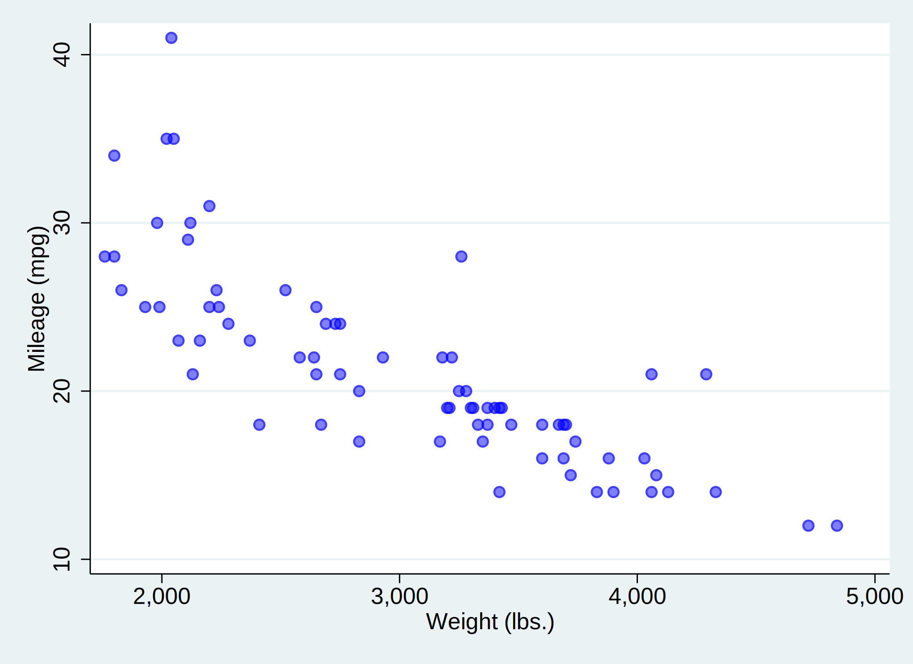

We will use the auto dataset. It includes variable price:
. webuse auto, clear
(1978 automobile data)
. summarize price
Variable | Obs Mean Std. dev. Min Max
-------------+---------------------------------------------------------
price | 74 6165.257 2949.496 3291 15906
The mean of price is 6165.257. We will also check the relationship of mpg and weight.

and via a linear regression:
| mpg | Coefficient | Std. err. | t | P>|t| | [95% conf. interval] | |
|---|---|---|---|---|---|---|
| weight | -.0060087 | .0005179 | -11.60 | 0.000 | -.0070411 | -.0049763 |
| _cons | 39.44028 | 1.614003 | 24.44 | 0.000 | 36.22283 | 42.65774 |